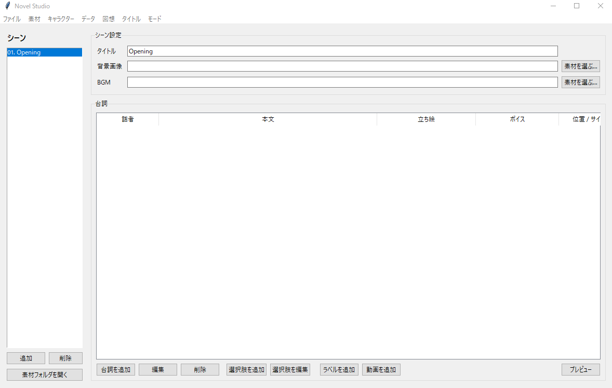
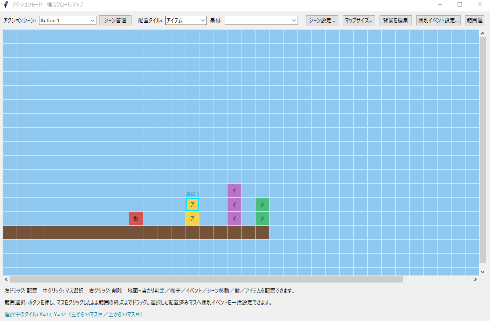

直感的な編集
画面を見ながらステージやイベントを組み立てられる設計。
CREATION TOOL / 02
● 開発中GreeN DoRaGoNが、自分たちのゲームを作るために開発しているゲーム制作ツールです。
CONCEPT
道具を作り、
その道具で世界を作る。
総長とミティが試行錯誤をすぐ形にするためのゲーム制作環境です。まずは自分たちのFREE GAMEで実際に使い、作品と開発経験を積み重ねながら育てていきます。将来は機能紹介、開発ログ、ダウンロードや販売へ拡張します。
FEATURES
画面を見ながらステージやイベントを組み立てられる設計。
制作とテストプレイを短いサイクルで繰り返せる環境。
FREE GAMEの制作で使いながら、必要な機能を追加していく開発方針。
FUTURE PLUGIN SYSTEM
将来的には、ホームページからエディター本体と必要なプラグインを選び、一緒にインストールして制作環境をカスタマイズできる形式を目指します。
基本機能を備えたエディター本体を導入。
使いたいジャンルや制作方法に合うプラグインを追加。
不要な機能を抱えず、自分の制作環境へカスタマイズ。
SCREENSHOTS
実際に開発中のエディタ画面

シーン、台詞、立ち絵、ボイスなどを管理する編集画面。

グリッド上へ地面、敵、アイテム、イベントなどを配置する画面。
DEVELOPMENT LOG
現在：基礎機能を開発中32% / 仮表示
エディタ紹介ページの初期版を追加しました。
機能や対応環境、開発の過程を順次公開します。